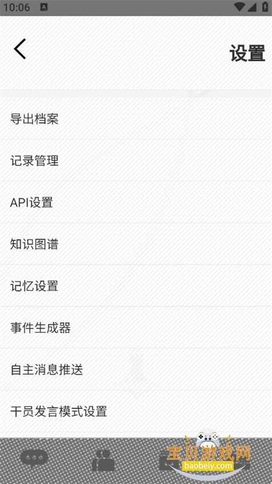

每周三小时方舟时间，我用 ZOOT 把养成规划和理智管理串成了一条链
以前算一次精二成本要翻三个 wiki、开两个 Excel、理智恢复全靠手机闹钟碰运气。装进 ZOOT 之后，从周日规划到每日执行再到碎片时间摸鱼，整条流程只在一个 App 里闭环。
旧流程：三个工具、两份 Excel、四个闹钟
我玩方舟是半休闲状态——每周三到四个晚上，每次两小时。这种节奏最怕两件事：一是规划养成路线时算错材料、练到一半缺芯片卡壳；二是理智溢出没收，浪费一管体力。
以前的工作流是这样的：
周日晚上坐下来规划本周养成，先打开 B 站的干员养成计算器网页版查每个干员精二需要什么材料，然后切换到 Excel 把三个要练的干员清单列出来，再去 Wiki 核对芯片组和龙门币消耗——这一轮下来大概要四十分钟。算完之后把理智恢复时间手动写进手机日历，再设三个闹钟，分别在 135、270、405 分钟后响。
这套流程能跑，但脆弱。网页版计算器有时候更新不及时，某个新版本干员的材料数据错了我一周都没发现；理智闹钟被微信电话顶掉、被系统省电模式静默也不是一次两次；最惨的是上个月重装系统忘了导出，Excel 里记的寻访记录和库存盘点全没了。
新流程：把 ZOOT 插进整条链的三个节点
换了 ZOOT 之后，我没再多装任何方舟相关的工具。养成规划、理智管理、碎片补漏，全在这一个 App 里闭环——而且它刚好嵌进我每周三小时的节奏里，没有额外学习成本。去ZOOT官网逛过一遍功能列表，基本就是按这个思路设计的。
第一个节点是周日晚上的养成规划。打开底部导航的方舟工具板块，进养成计算器，从通讯录选要练的干员，设好当前等级和目标等级，点一下计算。终端直接吐出完整清单：龙门币多少、经验书几本、锰矿石异铁组糖聚块各多少、芯片和芯片组各要几组。每种材料还标注了「当前持有」和「还需要」——我平时刷关掉的材料会自动同步进持有量，不用再手动盘点。整个过程从四十分钟压缩到五分钟。

第二个节点是每天的理智管理。以前设闹钟，现在直接在 ZOOT 里输入当前理智值，它按方舟固定的六分钟恢复节奏算好时间，然后后台定时任务到点推系统通知。我把系统通知权限开在最醒目的级别，电池优化白名单里锁死 ZOOT 不让杀后台——这两步是关键，国产 ROM 管得严，少一个就会收不到。目前跑了三周，只有一次通知没到，是因为手机连着电脑开了调试模式，断了之后就恢复了。
第三个节点是碎片时间补漏。理智溢出没法赶回家时，打开 ZOOT 逛博士广场——其他博士发的原创角色，按标签筛一下挑几个感兴趣的试用。试用品是临时加进通讯录，对话记录保本地，不影响原角色。上周在广场上碰到一个按阿米娅人设改的搞笑版，聊了十分钟笑出眼泪，比刷短视频有营养多了。

实操里容易断链的两个环节
整条流程跑下来，有两个地方我栽过跟头，后来摸清了规律。
第一个是理智提醒的后台存活问题。小米的 MIUI 和华为的 EMUI 杀后台尤其凶——我刚开始用的时候三天两头收不到通知，以为是 ZOOT 的 bug。后来按ZOOT文档里排错指南的五步一步步查：先确认系统通知权限（开着的），再看后台自启动（也开着），然后去电池优化白名单——果然，ZOOT 被系统自动归类到「限制后台耗电」里了。改完之后再没出过问题。不同品牌的 ROM 路径不一样，华为在电池耗电排行里改应用启动管理，小米在应用设置的自启动里找，OPPO 和 vivo 要进电池的异常耗电保护，都要手动过一遍。
第二个是数据备份。上个月换手机，我忘了导出旧版 ZOOT 的数据，卸载之后所有通讯录里修改过的人设和寻访记录全没了。ZOOT 的包名是 com.rhodesisland.zoot，签名冲突是常态——换渠道装新版本时必须先卸载旧版，而卸载会清本地数据。现在我养成了习惯：每周日规划完之后顺手打开设置 → 数据管理 → 导出备份，把备份文件存到百度网盘的专门文件夹里。下次换手机或者装新版本，先从官方下载拿安装包，导入一下就恢复了。
效果和边界：省了什么、什么时候不划算
量化一下效果：养成规划从四十分钟降到五分钟，每周少省三十五分钟；理智提醒再也没漏过，算下来每月多刷了大概三管体力对应的资源；碎片时间的广场聊天替代了原来刷抖音的二十分钟，内容质量高很多。流程里少了两次手动复制（Excel 里抄材料清单、日历里敲闹钟时间），多了一次每周备份的习惯——这个代价换得值。
但这套流程也有边界。养成计算器目前不支持一次输入多个干员做成本对比，我要对比两个精二方案还是得分别算完手动汇总；广场角色质量参差不齐，碰到模板化严重或盗用 IP 的要手动举报。另外 ZOOT 对安卓版本要求是 4.4 以上，现在大部分手机都满足，但如果是很老的设备就装不了。
总的来说，ZOOT 给我的价值不是一个功能，而是把原来散在三个工具里的碎片流程收进了一个闭环。对半休闲节奏的玩家来说，每周三小时的时间不应该花在算材料和设闹钟上——这个工具把那些琐事都吃掉了。资料维护在三个地方同步更新，GitHub 主仓库、Gitee 国内镜像、GitCode 代码托管，按需访问就行。